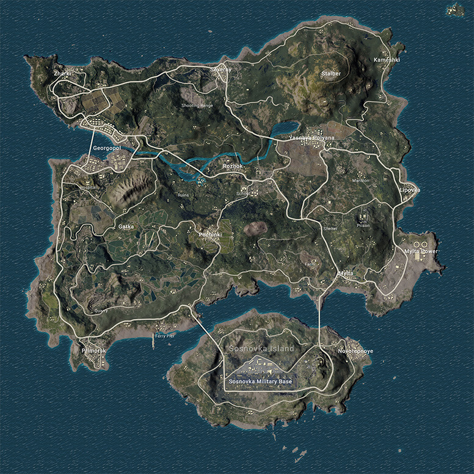
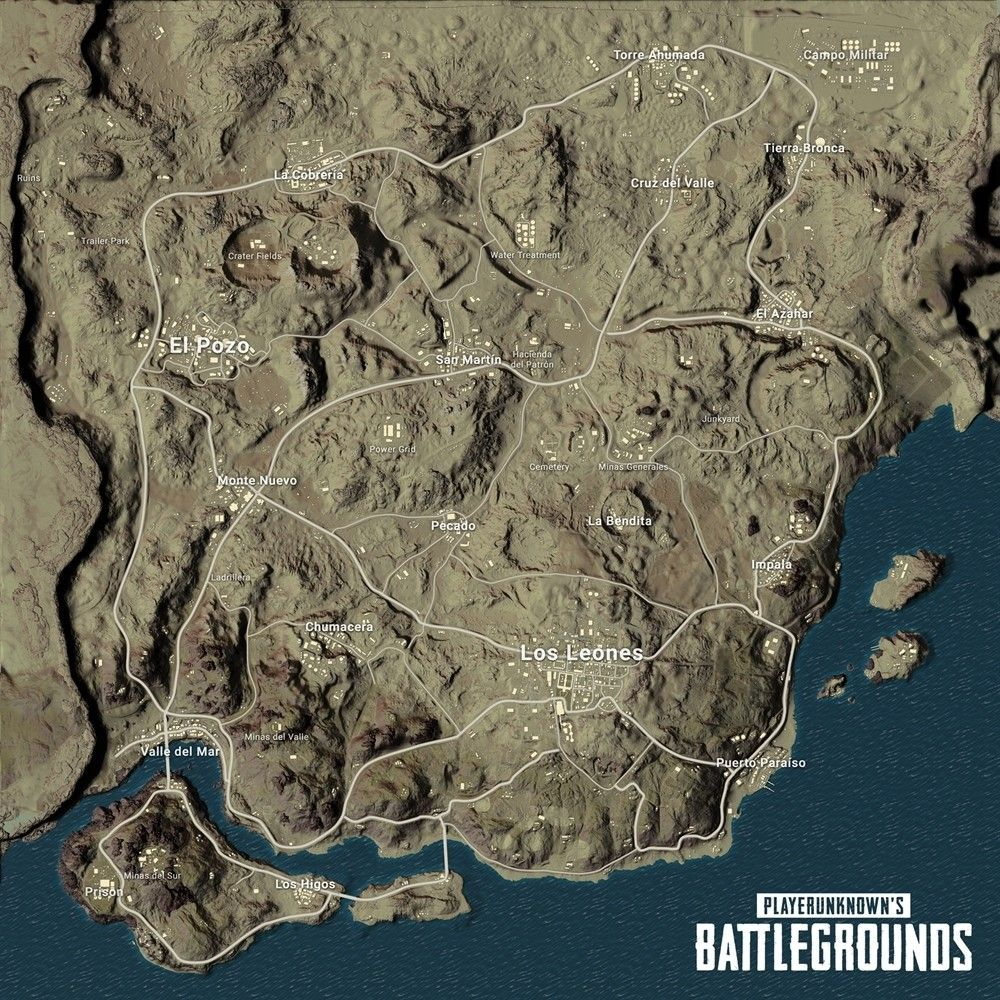
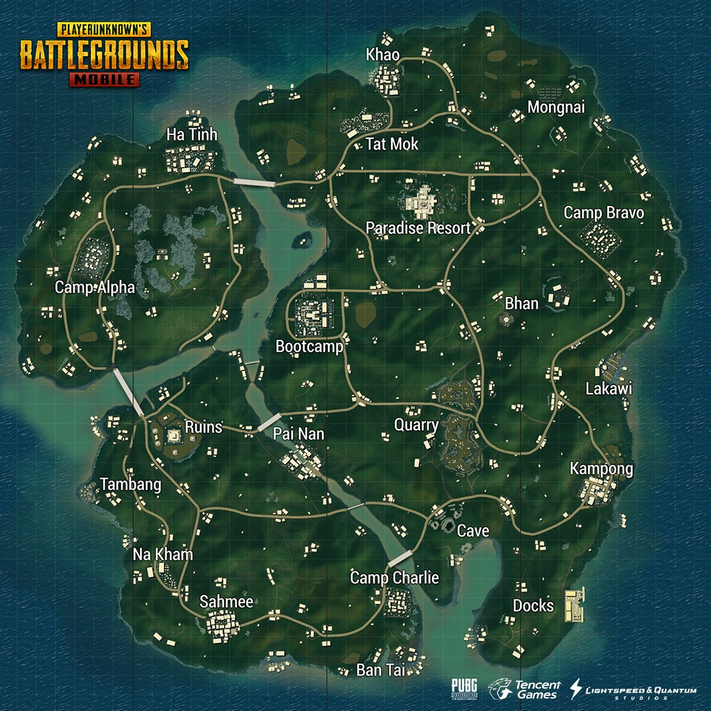
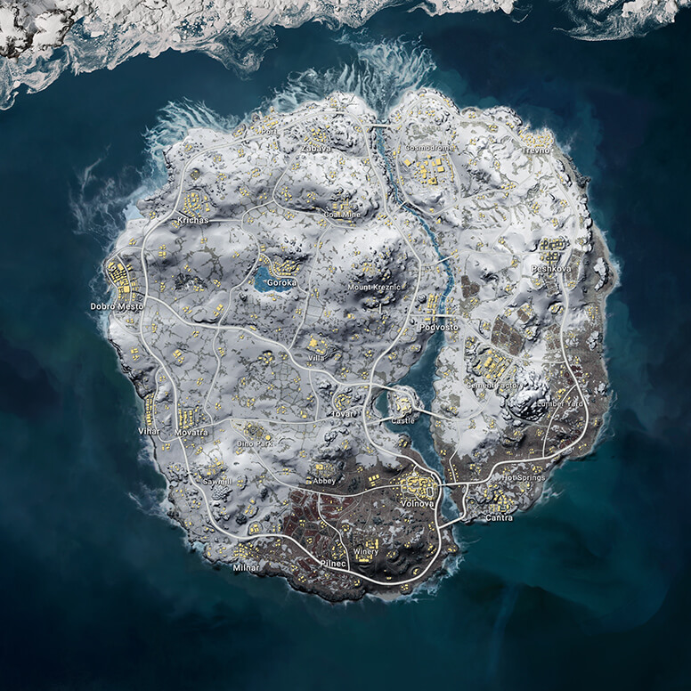

Erangel
Эрангель – это вымышленный заброшенный остров в Черном море, недалеко от России. С 1950-х годов остров был оккупирован советскими войсками и использовался в качестве испытательного объекта. Это объясняет наличие на острове военной базы, больницы и складских помещений. На жителях Эрангеля испытывалось химическое и биологическое оружие. Для подавления сопротивления островитян оккупанты применили мощные электрические излучатели. В результате, на острове возникли мощные силовые поля, заставляющие игроков искать безопасные места.
Поиск подходящего для высадки места
Поиск подходящего для высадки места Опыт не приходит сразу, и для того, чтобы выжить в PUBG, надо немного поиграть самому или хотя бы послушать более опытных игроков. Ты сможешь остаться в живых, если будешь применять определенную стратегию. Например, если высадишься в безопасном, но не совсем обычном месте. Такими местами на карте Эрангеля являются тюрьма, особняк или транспортные контейнеры на юге Георгополя. В них ты сможешь найти хороший запас оружия и техники, которые помогут тебе выжить.
Следующий важный для победы фактор, о котором всегда надо помнить, это траектория полета самолета. Места, находящиеся непосредственно под линией полета, почти всегда самые густонаселенные, поэтому их надо избегать.
Высадка в малонаселенных пунктах и не на воду обеспечит тебе хорошее начало игры. К примеру, один из самых безопасных способов – высадиться где-то на побережье. Тот факт, что за спиной у тебя будет только море, может сильно помочь тебе в продвижении к безопасной зоне. Такой медленный, но верный способ очень подойдет новичкам, у которых не так много опыта, чтобы сразу броситься в бой.
Важнейшие объекты в PUBG : Сталбер и остров Сосновка с одноименной военной базой
Важнейшие грода: Георгополь, Новорепное, Починки и Ясная Поляна
Другие города: Гатка, Камешки, Липовка, Мильта, Мильта Павер, Приморск, Рожок, Северный и Жарки
Самые популярные места для высадок на Эрангеле — Починки, школа и военная база. Если ты опытен и не боишься встреч с врагом, высаживайся там. Схватка с бывалыми игроками и захват лучшей добычи будут тебе обеспечены.
Miramar
Мирамар — это вторая карта PUBG Mobile и единственная, которая представляет собой пустыню. Погодные условия здесь суровы, а укрытий не так уж и много. В силу своей специфики карта Мирамар требует использования различных тактик и стратегий — здесь не получится пойти в открытую атаку, так как это будет чистым самоубийством. Вместо этого необходимо устраивать засады, выжидать и, возможно, даже позволять другим игрокам убивать друг друга до того момента, пока не придет ваше время выйти на арену.
Когда прыгать и где приземляться?
Мирамар включает в себя несколько “горячих” зон, но, в отличие от той же Эрангели, все они располагаются близко друг к другу. Изображение ниже даст вам наглядное представление этой ситуации: красные зоны являются наиболее популярными местами среди игроков, а зеленые — более безопасными и мирными пунктами.
Мы рекомендуем держаться подальше от зон скопления основной массы пользователей, поскольку там очень легко умереть вне зависимости от уровня ваших навыков. Никому не понравится отправиться на тот свет через 5 секунд после приземления, поэтому всегда обходите стороной Лос Леонес и Эль Позо. Эти богатые на лут зоны представляют собой настоящие арены смерти. Приземление в северные части Мирамара будет более разумным шагом.
Sanhok
Санок — южный тропический остров 4×4 км, затерявшийся в Юго-Восточной Азии; третья игровая карта в PUBG. На острове сосредоточены сельские деревушки с примитивным хозяйством, курорт, военные базы, рыбацкие доки, храм, карьер.
Санок (кодовое имя «Savage») стал первой картой, где применен динамический круг. Задача такого круга в том, что синяя зона двигается быстрее или медленнее, в зависимости пропорционально количеству оставшихся в живых игроков.
Санок стал первой картой для команды технических и 3D-художников PUBG, когда отдел дизайна физически выезжал в джунгли, чтобы исследовать местность, делать фотографии, зарисовки, концепты новой карты. Они работали над графической составляющей, исследовали местную жизнь, обратили внимание на ветер, воздух, смену погоды и окружающие звуки. Подобный трудозатратный подход дал результат — карта сразу понравилась игрокам, новички и старички приветствовали усилия разработчиков.
Санок — микс из двух азиатских слов «веселье» и «курица». Ну понятно.
Санок компактный по сравнению с другими картами, оружие на острове сбалансировано по-другому, что лут на карте самого высокого качества — много штурмовых винтовок, снайперок и DMR.
На третью карту добавили новые транспортные средства — Тукшаи (тук-туки), Скутеры.
С выходом новой карты, у игроков появилась дополнительная возможность сделать игру менее скучной — проходить миссии на ивенте. Билет на Санок. Игроки купившие билет и проходящие новые мисии получили новые скины на оружие и одежду.
Wikengi
Зимняя карта, как считают многие игроки, вышла самой красивой и сбалансированной. Первые две — «Эрангель» и «Мирамар» — были гигантскими, отчего геймплей на них сводился к бесконечной беготне. А «Санок» — слишком контактная и от того более рандомная. «Викенди» — это что-то среднее, на ней есть где затаиться и пострелять. Мы наиграли на этой карте около 30 часов и выделили на ней самые опасные и густонаселенные места, куда соваться новичкам точно не стоит.
Это «пешая карта» и транспорт здесь использовать стоит только в самых крайних случаях
Не забывайте про это, когда увидите на горизонте «УАЗик». Поведение транспортных средств на снежной поверхности непредсказуемо. Если перед вами выскочит противник, то среагировать должным образом вы не успеете. Машины скользят, их заносит в разные стороны и увернуться от пуль в такой ситуации сложноp
Если и передвигаться на транспорте, то только на снегоходе, который на снегу чувствует себя получше, чем машины. Но даже на снегоходе резкие повороты и маневры противопоказаны. Если синяя зона только начала двигаться в вашем направлении, то добраться до безопасной зоны лучше всего пешком. Так будет безопаснее.